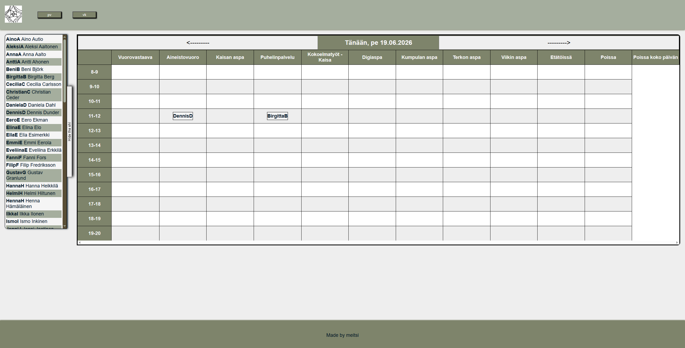
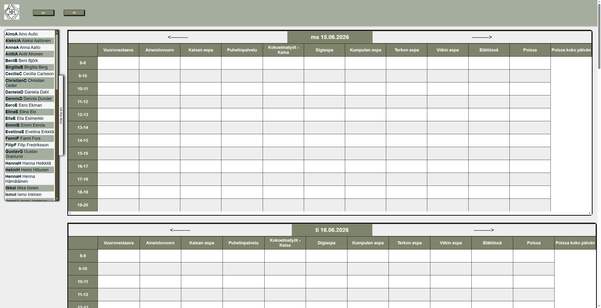

Tää on viel työn alla, niin tavaraa puuttuu mut kiitti lukemisest ööh juu
Hei!
Olen Mikko, vuotias tieto- ja viestintätekniikan perustutkinnon ja kaksoitutkinnon suorittanut opiskelija, pyrkimässä opiskelemaan tietojenkäsittelytiedettä.
Opinnot
-
Business College Helsinki
Tieto- ja viestintätekniikan perustutkinto
2020 - 2023
...
-
Töölön yhteiskoulun aikuislukio
Ylioppilastutkinto (kaksoistutkinto)
2020 - 2023
...
-
Yhtenäiskoulu
Peruskoulun luokat 6 - 9
2017 - 2020
...
-
Vallilan ala-aste
Peruskoulun luokat 1 - 5
2011 - 2017
...
Työkokemus
-
Helsingin yliopiston kirjasto
Asiakasneuvoja (Kirjastovirkailija)
19.02.2024 lähtien
Työtehtävinä kirjastonhoitajan työtä, mm. kirjojen hyllytys, lajittelu, varauskäsittely ja asiakaspalvelu.
Lisäksi muita satunnaisia kirjastoon liittyviä työtehtäviä, kuten kuten postin haku, sekä satunnaisia IT-askareita kuten kehitystyötä graafisten suunnitelmien pohjalta.
Asiakasneuvoja. Työkielinä suomi ja englanti, ja toisinaan tarvittaessa myös venäjä.
-
Terveyden ja hyvinvoinnin laitos
Suunnittelija (IT-tukihenkilö)
01.09. - 31.12.2023
Työtehtävinä tikettijonon ylläpito, tikettien ratkaisu, ja asiakaspalvelu Jiratehtävienhallintaohjelmiston kautta, sekä muiden Atlassianin tuotteiden käyttö tukipyyntöjen ratkaisussa.
Tehtäviin kuului lisäksi Java-pienohjelmistokehittämistä, jossa teknologioina suurimmaksi osaksi Apache Wicket ja PostgreSQL.
Työkielinä suomi ja englanti.
-
Terveyden ja hyvinvoinnin laitos
Ohjelmistokehittäjäharjoittelija
11.01. - 21.05.2023
Ammatillisiin opintoihin sisältyvä työharjoittelu. Harjoittelija digitaalisten palveluiden yksiköllä.
Tehtävänä pääosin fullstack-ohjelmistokehitykseen osallistuminen harjoittelijana, Spring- ja Angular-frameworkeja sekä PostgreSQL tietokantaa käyttäen.
Lisäksi myös organisaatiotoiminnan ja sovelluskehitykselle ominaisten käsitteiden, kuten scrum ja kanban, ketterä (agile) sovelluskehitys.
Työkielinä suomi ja englanti.
-
Menestystarinat Oy
Ohjelmistokehittäjäharjoittelija
22.03. - 21.05.2021
Ohjelmistokehitystä Wordpress-alustalla Elementor-rakennusjärjestelmällä.
Päätyökielenä englanti etäyhteydellä Suomen ulkopuolella sijaitsevien kollegoiden kanssa, ja suomi lähinnä vain lähityössä.
-
Yliopiston apteekki
Apteekkiapulainen
marraskuu 2019
Ylä-asteen TET-harjoittelu, apteekkiapulainen.
Tehtävinä varasto- ja siivoustyö, sekä muut satunnaiset askareet
-
Goodmax Oy
Sihteeriapulainen
marraskuu 2018
Ylä-asteen TET-harjoittelu, sihteeriapulainen
Tehtävinä arkistointi ja tietojen syöttö tietojärjestelmään
Projektit
-
Aikatauluprojekti
SvelteKit & MariaDB
Töissä käytössä olevasta n. 15 v vanhasta JQuery-pohjaisesta aikatulusovelluksesta inspiroituneena, päätin kokeilla tehdä itse samankaltaisen yksinkertaisen vuorojärjestelmän.


On vielä keskeneräinen ja työn alla, mutta SvelteKit:iä itselle uutena teknologiana käyttäen on ollut hauska oppimisprojekti.
Yhteystiedot
Parhaiten minut saa kiinni sähköpostitse: mikkolegezin(at)gmail.com, tai esim. Linkedinistä! (ks. oikea reunapalkki)
Laittaisin tänne ehkä joitain muitakin medioita listan täytteeksi, mutta tämmöseen portfolioon ehkä nyt vain nämä "virallisimmat"
psst esim. Steamistä tosin voi löytää jos etsii samalla nimellä kuin Githubissa :D